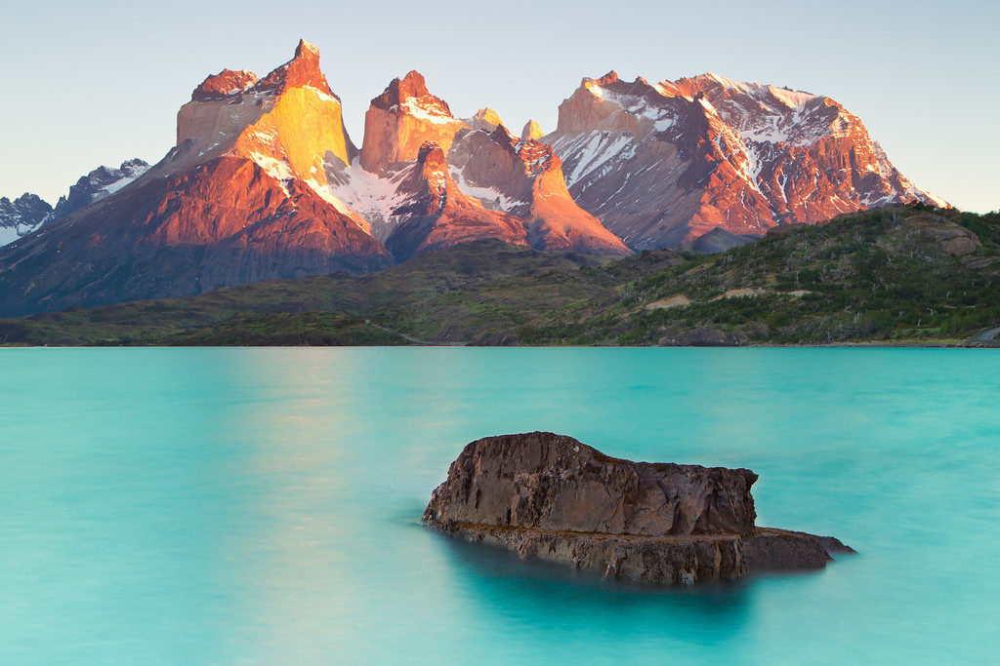
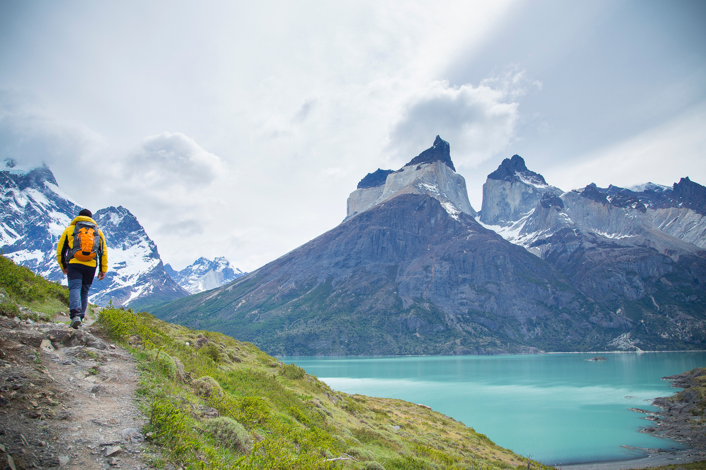

WebPage Creator
Wong Cai Yi
Computer Science Student | Front-End Learner
🌐
📘
📸
Age: 20 years old
- Fear of insects.
- Like quiet place -- no people, no insects.
Bio...
A kind of person who still feels sleepy even after sleeping a lot...
Dreams of becoming a rich woman --- because money solves everything...
Bathing, Eating, Shopping, Sleeping are my ways to calm down
when I facing a problem in my lifeee...
Introduction
Where to find them?
Torres del Paine National Park, ChileWhat are they?
The Cuernos del Paine or 'Paine horns' is a collective name given to a set of spiky granite peaks in Torres del Paine National Park, all of which stand at over 2000 metres high.The spikes have fittingly sharp names: to the north, the Aleta de Tiburón (Shark's Fin), to the east, from north to south, Fortaleza (Fortress), La Espada (The Sword), La Hoja (The Blade), La Máscara (The Mask), Cuerno Norte (North Horn), and Cuerno Principal (Main Horn).
The Cuernos del Paine also lend their name to one of the park's 'refugios' or 'lodges', Refugio and Camping Los Cuernos.
How can I see them?
The Cuernos are located in the middle of the W Trek, the most popular route for trekking in Torres del Paine National Park. Best views are from the top of Valle Frances, often hiked on day 3 of a traditional W Trek.Popular Level of Cuernos del Paine
Image of Cuernos del Paine
1 / 3

The View of Cuernos del Paine
2 / 3

The Left View of Cuernos del Paine
3 / 3

Trekking Cuernos del Paine